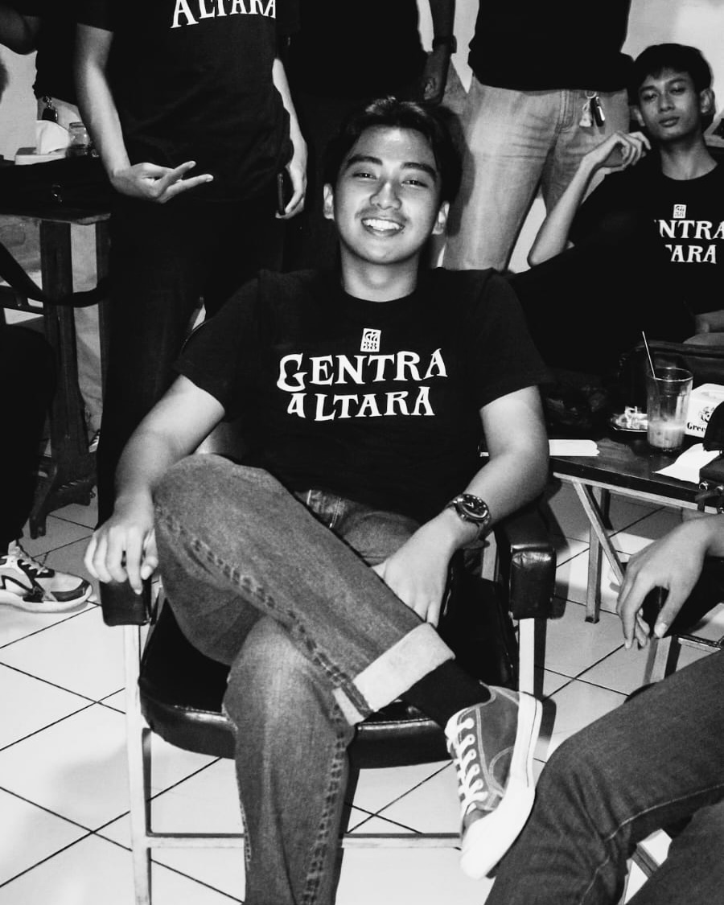

01 — Profil
Saya memiliki minat di bidang teknologi, desain grafis, fotografi. Saya senang mempelajari hal-hal baru serta terus mengembangkan keterampilan dalam teknologi informasi dan desain digital.
Saya merupakan pribadi yang disiplin, bertanggung jawab, mudah beradaptasi, dan mampu bekerja secara mandiri maupun dalam tim. Dengan semangat belajar yang tinggi, saya selalu berusaha meningkatkan kemampuan dan memberikan hasil terbaik dalam setiap kesempatan.
